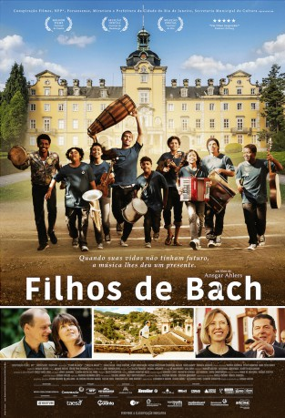

#5413 Bach in Brazil
 
 IMDB-Wertung: 6.8 / 10
IMDB-Wertung: 6.8 / 10  Metascore: 0
Metascore: 0 
Inspired by true events, this is a story about what happens when two outsiders from opposite corners of the world are thrown together: Brazil and Germany. Marten Brueckling, a retired music teacher from Germany, has inherited an original sheet of music from Bachs son. Marten has to collect the sheet in person in the beautiful Baroque city of Ouro Preto in the heart of Brazil. But Brazil is not for beginners: Funny circumstances drives hm to teach music to the kids of a juvenile detention center. Bachs music and Brazilian instruments mix perfectly. One of the kids is Fernando, a lovable, abandoned boy, who lived on the streets. But Marten discovers that they have more in common as he thought.
Jahr: 2015
Dauer: 87 Minuten
FSK: 0
Land: Brasilien Studio: NFP Marketing & DistributionTonspuren: DD5.1 - ,
Untertitel:
Auflösung: SD (720x400) Größe: 1259 MB
Genre: Drama, Musik, Komödie
Regisseur: Ansgar Ahlers
Drehbuch: Nicola Guaglianone
Soundtrack:
Darsteller:
- Edgar Selge als Marten Brückling
- George Lenz als Festivalveranstalter
- Peter Lohmeyer als Knut Schuhmann
- Pablo Vinicius als Fernando
- Aldri Anunciação als Candido
- Franziska Walser als Marianne
- Dhonata Augusto als
- Dhonata Augusto als Heitor
- Marília Gabriela als Ministerin
- Thaís Garayp als Aufseherin
- Helene Grass als Notarin
- Hans-Peter Korff als Prinz
- Stepan Nercessian als Direktor
- Isabella Parkinson als Brazilian Advocate
Datei: X:\2015(A-F)\Bach in Brazil (2015, FSK0, 720x400).avi seit 30.01.2017
Festplatte: HD 2015(A-Z)
 Es gibt insgesamt 143 Filme in der Gruppe '2015(A-F)'
Es gibt insgesamt 143 Filme in der Gruppe '2015(A-F)'